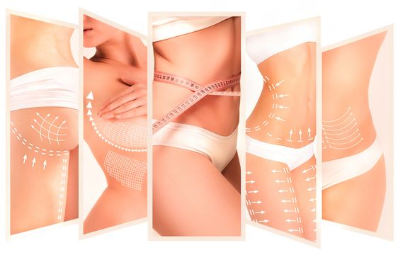
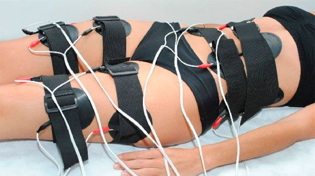
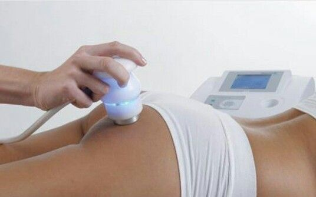
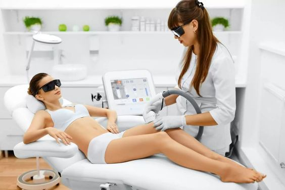

PEELING: El Peeling es un procedimiento para remover
células muertas, estimula la formacion de colágeno,
elimina manchas ocasionadas por el sol, tensa la piel,
borra arruguitas, da brillo y luminosidad profunda
a la piel.
MICRODERMOABRASIÓN CON PUNTA DE DIAMANTE Y ÁCIDO HIALURÓNICO:
Es un procedimiento no invasivo, seguro y con resultados óptimos
inmediatos, para conseguir una piel joven, saludable y luminosa.
PULIDO E HIDRATACIÓN FACIAL: Eliminá todas las células muertas e impurezas y
celulas muertas de tu piel, permitiendo una mayor oxigenación y mejorando su aspecto notablemente.
Corporales

ONDAS RUSAS Y ELECTRODOS: Este sistema reafirma rápidamente
tus músculos y modela tu cuerpo. Este tratamiento fortalece el sistema circulatorio, eliminando las toxinas que generan celulitis.

RADIOFRECUENCIA: Un sistema de ondas electromagnéticas que
penetran profundamente en las capas subdérmicas eliminando la celulitis y la flacidez.
ULTRACAVITACIÓN: Método no quirúrgico, confiable e indoloro, que permite eliminar adipocitos (grasa),
localizados en diversas áreas del cuerpo como abdomen, brazos, cintura,
muslo completo (externo e interno), pantalón de montar.

Depilación

DEPILACIÓN: En 3 o 4 zonas a elección. Se utiliza un sistema de alta tecnología para erradicar el vello a través de la fotodepilación
y la luz pulsada para que tu depilación sea rapida y efectiva.
Láser Soprano
En qué consiste: Es el sistema que utiliza el láser de diodo. "A través de sus fotones va debilitando el vello y así
sus células se van inactivando haciendo que el pelo vaya perdiendo fuerza y su crecimiento
disminuya", nuestro metodo "Soprano Ice y Titanium: la ventaja de depilar con Soprano tanto de los dos modos, es que es un método por calentamiento, es un método en movimiento inmotion se llama, es un método por calentamiento que te permite llegar a mayor temperatura en el folículo piloso para poder ser más efectivo, pero también al hacerlo en forma gradual te permite proteger la epidermis evitando quemaduras".
Cantidad necesaria de sesiones: se estima entre 8 y 10 sesiones.
Mantenimiento: entre 1 o 2 veces por año.
Beneficios: ayuda a prevenir infecciones cutáneas.
Una de las infecciones más frecuentes en la piel es la foliculitis,
derivando del uso de cuchillas en las maquinitas de afeitar,
durante la depilación y los cortes e irritaciones que se producen,
dando lugar a la proliferación de bacterias en la piel,
penetrando a través el tallo piloso y llegando a afectar al folículo piloso.
Con la depilación láser, este problema se acaba.